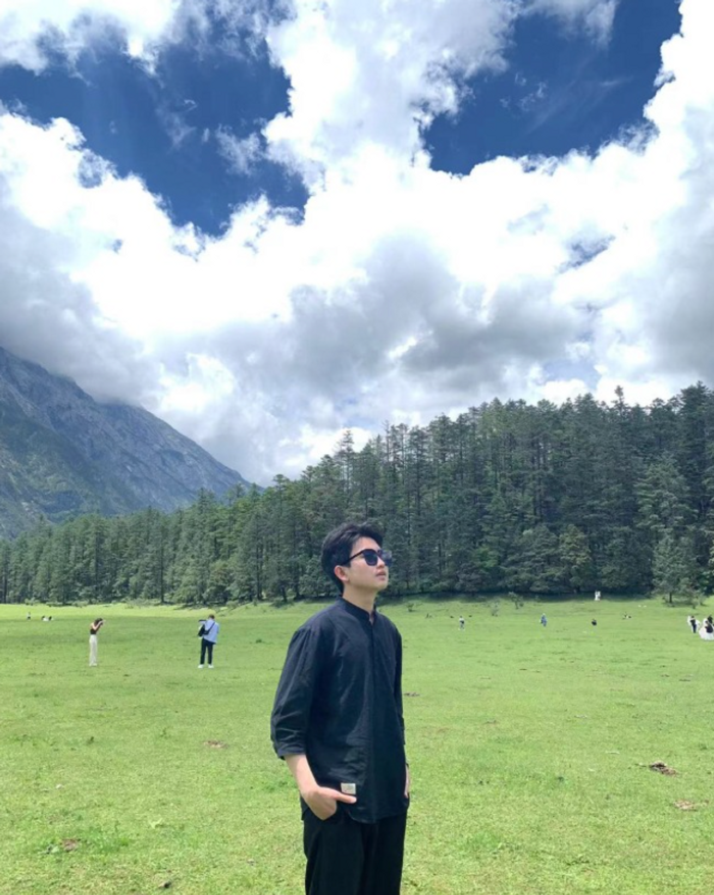
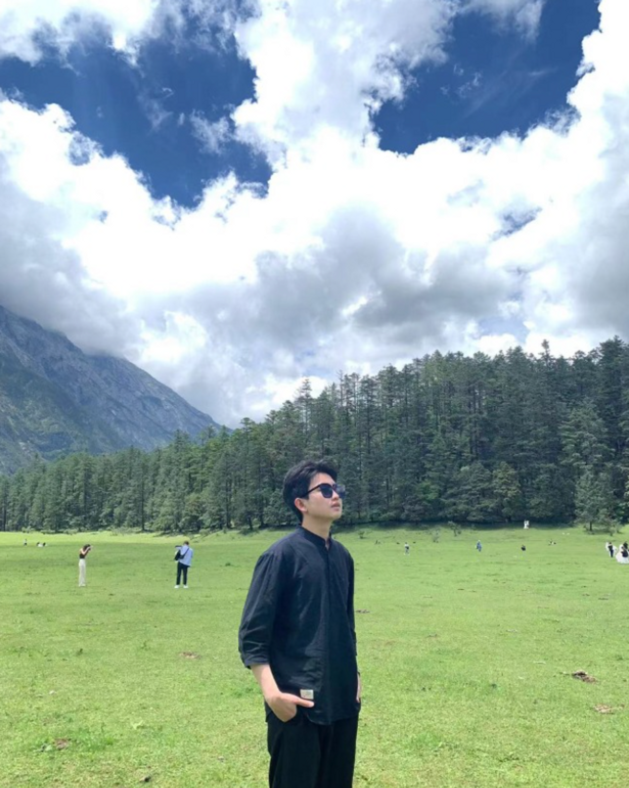

🤓 Hey folks! I am Hengyuan Zhang (张恒源). I am a master’s student at Tsinghua University from August 2022, under the supervision of Prof. Yong Jiang and Prof. Yujiu Yang. My current research interests primarily focus on applying Natural Language Processing (NLP) and Data Mining in domain-specific studies (e.g., Finance, Education, and Cognitive Science), hopefully in an interpretable manner. I am also exploring the possibility of enrolling in a Ph.D. program for the Fall of 2025. If there are any opportunities for collaboration, please feel free to reach out to me at your convenience.
💻 Interships
 Xiaomi, AI Lab, Beijing
Xiaomi, AI Lab, Beijing
- Mar. 2022 - Sept. 2022, Research Intern, working with Tong Chen and Yanran Li
 Tencent, AI Lab, Shenzhen
Tencent, AI Lab, Shenzhen
- Mar. 2023 - Jul. 2023, Research Intern, working with Wei Bi
 Sensetime, Research, Shenzhen
Sensetime, Research, Shenzhen
- Aug. 2023 - Mar. 2024, Research Intern, working with Fei Tan
 Microsoft Research Asia, Natural Language Computing (NLC) Group, Beijing
Microsoft Research Asia, Natural Language Computing (NLC) Group, Beijing
- Mar. 2024 - Present, Research Intern, working with Haoyang Huang and DongDong Zhang
📝 Publications
* denotes equal contribution


Understanding Multimodal Deep Neural Networks: A Concept Selection View
Chenming Shang, Hengyuan Zhang, Hao Wen, Yujiu Yang
[Paper] | Computer Vision, Cognitive Science | CCF-B Conference


📚 Preprint
🏅 Selected Honors and Awards
👉 Tsinghua University College Comprehensive First Class Scholarship (院综合一等奖学金), 2023
👉 National Scholarship (国家奖学金), 2019, 2020, 2021
👉 Outstanding Graduate Student of Beijing (北京市优秀毕业生), 2021
👉 Excellent League Member of Beijing (北京市优秀团员), 2021
👉 Merit Student of Beijing (北京市三好学生), 2021
👉 Meritorious Winner, Interdisciplinary Contest in Modeling (ICM), 2021
👉 Computer Design Competition National- Second Prize, 2020
👉 CUMCM-Beijing Area First Prize, 2020
👉 Xiaomi Third Hacker Marathon Excellence, 2022
👉 Excellent Volunteer, 2020
📌 Miscellaneous
- I am actually a person with a strong desire to share. In my spare time, I like writing blogs and sharing experiences on Redbook, Wechat Official Account and Bilibili (阿源的NLP碎碎念). The selected blogs are as follows:
- Linguistic Regions in the Large Language Model
- Prevent Catastrophic Forgetting via SoftMask Mechanism
- The Key Components in Transformer
- The Evaluation of Instruction Following
- Skill Localization of Large Language Model
- iMAge-guided Text GeneratIon with CLIP
- The Difference between GLM and UL2 Architectures
- I used to be a guitarist 🎸 in a band when I was in high school. Also, I love playing badminton 🏸, table tennis 🏓 and soccer ⚽️. During holidays, I will also seize any opportunity to travel around the world ⛳️.
 
